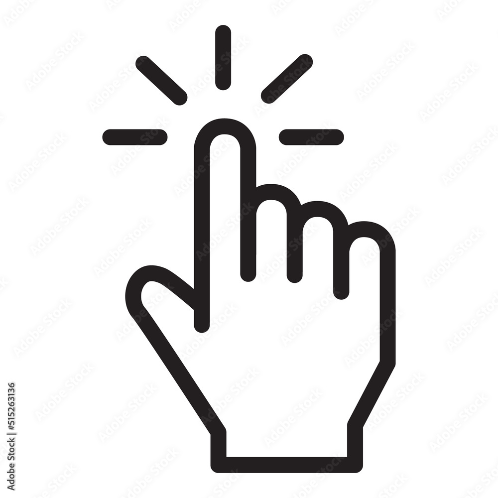
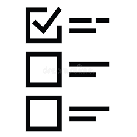
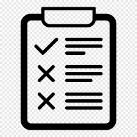

¿Qué es un tooltip?
Es un pequeño mensaje que aparece al pasar el cursor sobre un elemento para dar información adicional.
Es un pequeño mensaje que aparece al pasar el cursor sobre un elemento para dar información adicional.

Función principal
Ayuda a los usuarios a entender elementos de la página sin saturar la interfaz.
Ayuda a los usuarios a entender elementos de la página sin saturar la interfaz.

Activación
Se muestra al pasar el cursor (hover) o al enfocar un elemento (focus), y a veces al hacer clic.
Se muestra al pasar el cursor (hover) o al enfocar un elemento (focus), y a veces al hacer clic.

Tipos
Existen tooltips simples, con títulos, con descripción, interactivos o animados.
Existen tooltips simples, con títulos, con descripción, interactivos o animados.
Beneficios
Mejoran la usabilidad, ofrecen ayuda contextual y no ocupan espacio en la interfaz.
Mejoran la usabilidad, ofrecen ayuda contextual y no ocupan espacio en la interfaz.

Consejos
Mantén el texto breve, claro y evita saturar la página con demasiados tooltips.
Mantén el texto breve, claro y evita saturar la página con demasiados tooltips.